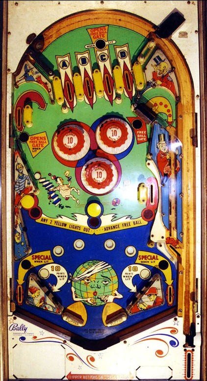

1-point switch hits determine which of the four top lanes is lit. Top lanes always score 10 points. Making the A or C top lane when lit qualifies the right out lane Special for the rest of the ball, and making the B or D top lane when lit does the same for the left out lane Special. When an out lane Special is qualified, it is lit intermittently based on 1-point switch hits. As far as I have encountered, a Special can only be worth a free game.
If there is no ball in the Free Ball Lane that extends up the right side of the table, make the C top lane (lit or not) or the upper left side lane to open the Free Ball Gate. When the Gate is open in the upper right, shoot inside to lock a ball. To release this ball, you need to complete 5 fre ball advances. The two yellow mushroom bumpers and the small rollover lane to the right of the bumpers are lit yellow; making one of these switches unlights it. Unlighting any 2 of the 3 yellow lights will reset the yellow lights and advance the free ball one position. After 5 advances, the free ball is dropped into the shooter lane, and 100 points are scored. Completing a free ball advance does nothing if there is not actually a ball locked in the free ball lane. The shooter lane free ball can be plunged to make a 2-ball multiball or left alone to be played as an extra ball. If playing Mad World in a tournament setting, verify in advance with a tournament director if the released ball needs to be immediately plunged for multiball, played as an extra ball that can be flipped, or played as an extra ball that can only be plunged. The status of the yellow lights and the Free Ball is preserved from player to player, ball to ball, and game to game.
Pop bumpers and slingshots score 1 point or 10 when lit, and are lit intermittently based on 1-point switch hits. Like many mid-1960s Bally games, Mad World uses a dynamic difficulty system that decreases the frequency at which the bumpers and slingshots are hit if the game has given out many free games recently.
There are no in lanes. Flippers back up directly to the slingshots. Out lanes score 10 points. There is no end of ball bonus or conventional extra ball feature. Tilt ends game, but only for the player who tilted.
The below picture of 's playfield was taken from the Internet Pinball Database, where it was originally provided by Alan Tate.
